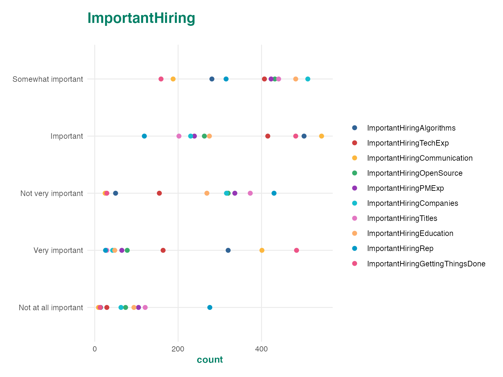
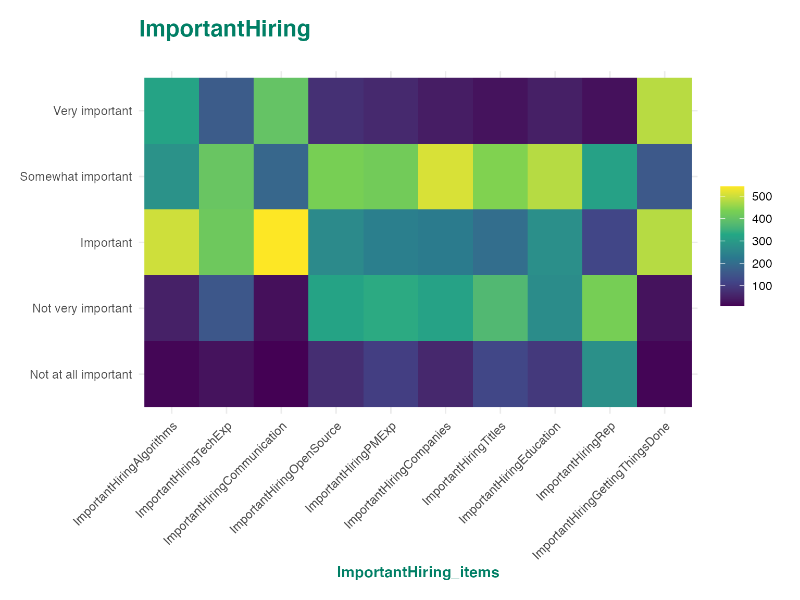
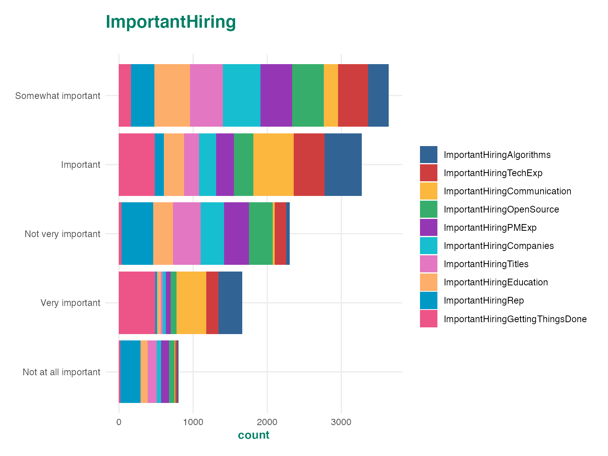
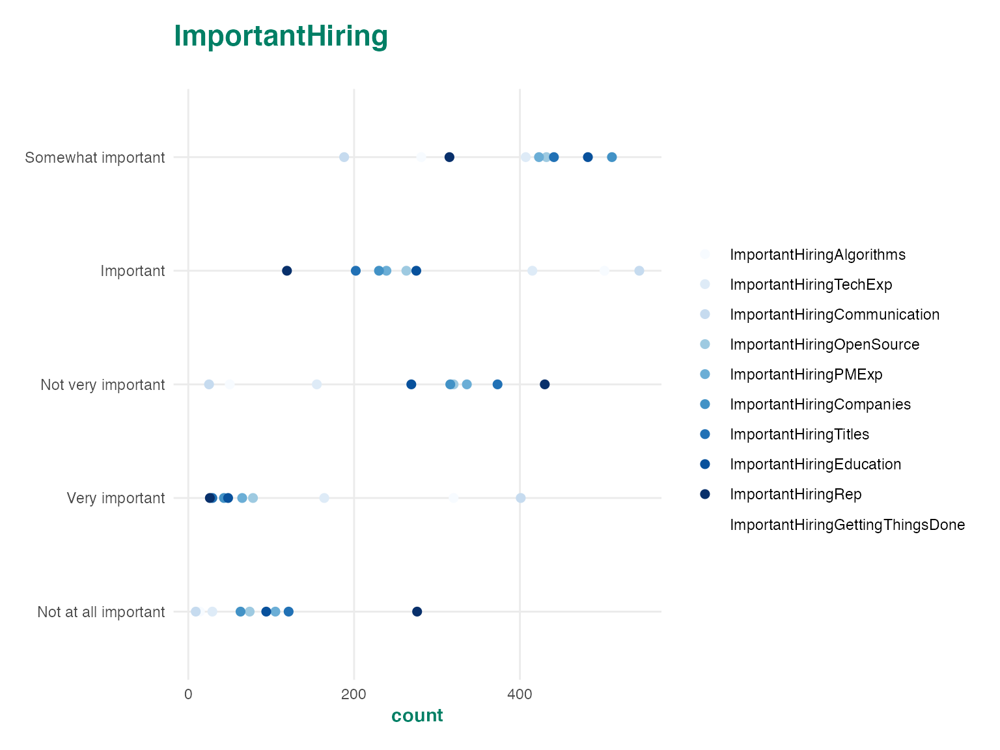
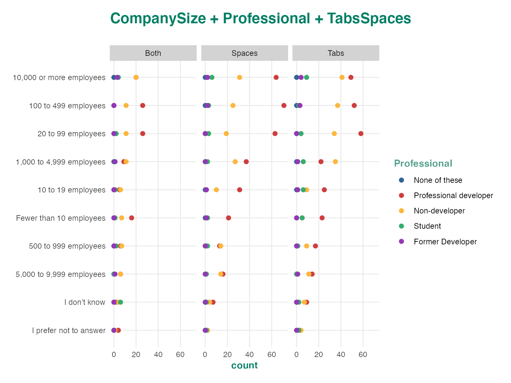

The Crunch web app provides a number of excellent visualizations and summary statistics to help communicate survey results to clients, but by its nature a web interface can’t accommodate every type of plot or analysis. As a result one of our core design principles at Crunch is to let users access their data in as convenient a way as possible. This lets you seamlessly integrate Crunch data into your tool of choice, and customize how you communicate that data. This vignette goes through how you can use ggplot2 and tidyverse tools to analyze and display Crunch data.
First we need to load a dataset into R. If this is a new process to you, see the crunch vignettes.
You can plot crunch variables using ggplot2’s autoplot() method. This will generate a plot which looks a lot like the plots produced on the app, but can be customized with ggplot methods.
autoplot(ds$CompanySize)
Crunch autoplot methods can produce three families of charts: dot plots, bar plots, and tile plots. These methods will automatically adjust for the dimensionality of the data which is sent into the plotting method. For instance, categorical array variables have two dimensions, so when they are plotted, you get a two dimensional plot.
autoplot(ds$ImportantHiring)
autoplot(ds$ImportantHiring, "tile")
autoplot(ds$ImportantHiring, "bar")
Since the autoplot methods produce ggplot objects, you can customize and extend them just as you would any other ggplot. For example, you can change the theme of the plot or alter the color palette.
p <- autoplot(ds$CompanySize)
p + theme_grey()
p +
geom_point(color = "red", size = 3) +
scale_x_log10()
autoplot(ds$ImportantHiring) +
scale_color_brewer()## Scale for 'colour' is already present. Adding another scale for 'colour',
## which will replace the existing scale.
You can also define your own themes or use themes from other packages. This is helpful if you would like to send plots to a client using their style guide. For examples of sample corporate themes, take a look at the ggtech package from AirBnb, or the ggthemes package.
ggplot2 has a rich ecosystem of extensions which you can use to add functionality to Crunch plots. For example, you can use patchwork to combine several plots together, or add interactivity to your plots with plotly. For a full list of what you can do with ggplot objects, see the ggplot website website.
Crunch datasets are often large enough that you can’t easily calculate summary statistics on your local machine. As a result we try to keep as much computation as possible on the server and only send the results of the calculation to your local R session. One of the main ways this is accomplished it through CrunchCubes, which are typically used to calculate cross-tabs between categorical variables.
CrunchCubes are n-dimensional arrays where each dimension corresponds to one of the variables used to calculate the cross tab. For instance crtabs(~ Professional + CompanySize + Country, ds) will generate a three dimensional array where each entry is the number of respondents who selected a given category along the three dimensions. You can plot high dimensional CrunchCubes in the same way that you can plot Crunch Variables and the additional dimensions will be assigned to plot facets.
ds %>%
group_by(CompanySize, Professional, TabsSpaces) %>%
summarize(count = n(Country)) %>%
autoplot()
Autoplots are great, but cubes can quickly become too complex for a general plotting method to do a good job at representing the plot. If we include lots of dimensions in a cube, or include a dimension with a lot of categories the plot becomes unreadable. We can still work with these types of cubes by using the as_tibble method to convert it into a long data frame. This lets us further process the data to produce a readable plot.
cube <- crtabs(~ Country + Professional + TabsSpaces, ds)
cube_tbl <- as_tibble(cube)
cube_tbl## # A tibble: 4,848 x 6
## Country Professional TabsSpaces is_missing count row_count
## <fct> <fct> <fct> <lgl> <dbl> <dbl>
## 1 Afghanistan None of these Both FALSE 0 0
## 2 Aland Islands None of these Both FALSE 0 0
## 3 Albania None of these Both FALSE 0 0
## 4 Algeria None of these Both FALSE 0 0
## 5 American Samoa None of these Both FALSE 0 0
## 6 Andorra None of these Both FALSE 0 0
## 7 Angola None of these Both FALSE 0 0
## 8 Anguilla None of these Both FALSE 0 0
## 9 Antarctica None of these Both FALSE 0 0
## 10 Antigua and Barbuda None of these Both FALSE 0 0
## # … with 4,838 more rowsThe tibble contains most of the same information as the cube data structure, but it is easier to work with using tidy tools. The first few columns will always correspond to the dimensions of the cube. The is_missing column represents whether any of the constituent categories are missing, which lets you easily filter out missing elements from the table. The last columns contain the cube measures which will usually be count and row_count. The row_count column contains the unweighted counts, and the count column contains the weighted counts. If there is no weighting applied to the dataset, then count and row_count will be the same.
The cube output is now in the correct format to feed into tidyverse tools. Here we filter the dataset to produce a readable chart.
cube_tbl %>%
filter(
!is_missing,
Professional == "Professional developer") %>%
arrange(desc(count)) %>%
top_n(10) %>%
ggplot(aes(y = Country, x = count, color = TabsSpaces)) +
geom_point() +
theme_crunch()## Selecting by row_count
This lets you combine the speed and efficiency of the Crunch computation infrastructure with the flexibility of the tidyverse. You can let Crunch do the memory intensive counting operation, but still get a tidy dataframe representation that is easy to work with using other packages.
Array variables are treated slightly differently from regular Crunch variables both in the cube itself and the tbl_df which is produced by as_tibble. Array variables add two dimensions to the tibble, in the case of categorical array variables these will be the subvariables and their categories, and for multiple response this will be the options and whether or not each option was selected.
cube <- crtabs(~ WantWorkMR + ImportantHiring, ds)
cube_tbl <- as_tibble(cube)
cube_tbl## # A tibble: 6,120 x 7
## WantWorkMR_items WantWorkMR_sele… ImportantHiring… ImportantHiring…
## <fct> <lgl> <fct> <fct>
## 1 VBA TRUE ImportantHiring… Not at all impo…
## 2 TypeScript TRUE ImportantHiring… Not at all impo…
## 3 Java TRUE ImportantHiring… Not at all impo…
## 4 Scala TRUE ImportantHiring… Not at all impo…
## 5 JavaScript TRUE ImportantHiring… Not at all impo…
## 6 Perl TRUE ImportantHiring… Not at all impo…
## 7 Lua TRUE ImportantHiring… Not at all impo…
## 8 Matlab TRUE ImportantHiring… Not at all impo…
## 9 Erlang TRUE ImportantHiring… Not at all impo…
## 10 Assembly TRUE ImportantHiring… Not at all impo…
## # … with 6,110 more rows, and 3 more variables: is_missing <lgl>, count <dbl>,
## # row_count <dbl>In the tibble output, each array variable is decomposed into two columns. The multiple response variable has an _items column which specifies the multiple response options, and a _selections column which specifies whether each option was selected (TRUE), not-selected (FALSE) or not answered (NA). The categorical array variable gets an _items column for the subvariable names, and a _categories column for their categories. Take note that by default the multiple response selection status is hidden from the array representation of CrunchCubes, but is included in the tibble representation. You can filter the tibble to select cases where the multiple response *_selctions variables are TRUE to get the entries which are displayed when CrunchCubes are printed to the console.
This vignette provided the basics of plotting Crunch objects, and processing CrunchCubes using tidy tools. You can use these to conduct analyses and generate custom visualizations of Crunch data, but you can also send these custom plots back into the Crunch app by including them in a Shiny app or a flexdashboard and hosting them on the Crunch shiny infrastructure.